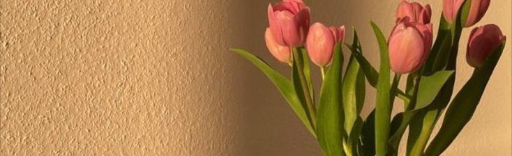

Hello, and welcome to Soft Hours. This began as a notebook I kept during a busy year, to remember the small things that made me feel like myself.
I write about slow mornings, windowsill plants, soup, walking and paper. I am not an expert, only a person practising attention.
Start reading